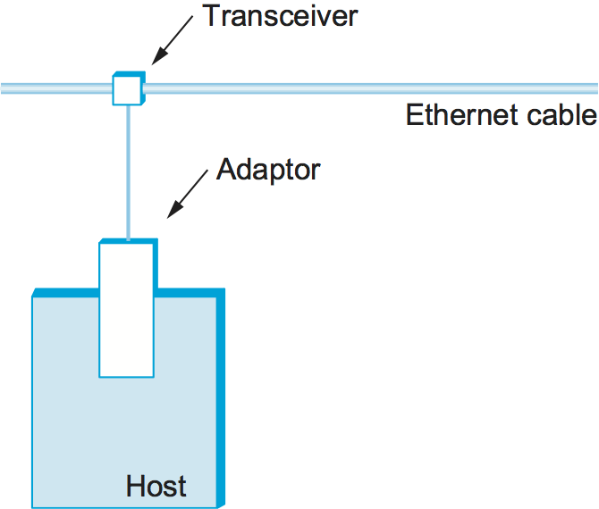
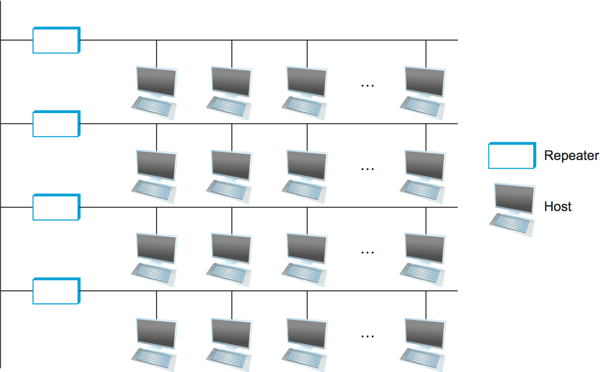
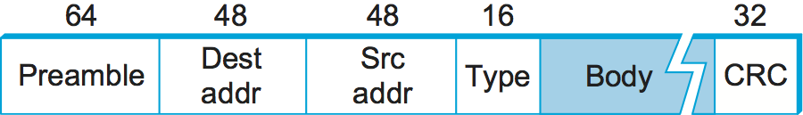
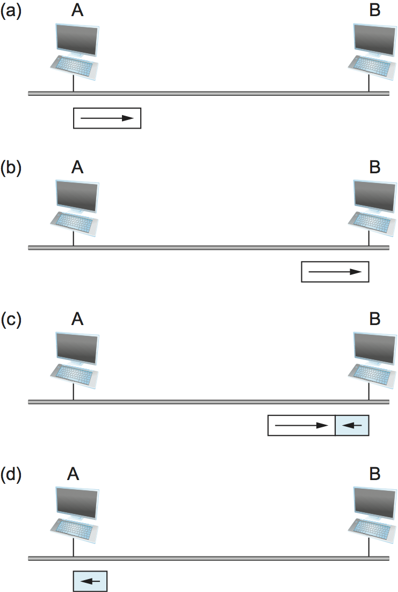

2.6 다중 접근 네트워크
1970년대 중반 Xerox Palo Alto Research Center(PARC)의 연구자들이 개발한 이더넷은 여러 경쟁 기술을 제치고 결국 지배적인 근거리 통신망 기술이 되었다. 오늘날에는 주로 802.11 무선 네트워크와 경쟁하지만, 캠퍼스 네트워크와 데이터센터에서는 여전히 매우 널리 쓰인다. 이더넷의 기반 기술을 더 일반적으로 부르는 이름은 충돌 검출 기능을 갖춘 반송파 감지 다중 접속(Carrier Sense, Multiple Access with Collision Detect, CSMA/CD)이다.
CSMA라는 이름이 시사하듯, 이더넷은 다중 접근 네트워크이다. 즉, 여러 노드 집합이 공유 링크를 통해 프레임을 송수신한다. 따라서 이더넷은 여러 스테이션이 꽂혀 있는 버스와 비슷하다고 생각할 수 있다. CSMA/CD에서 “carrier sense”는 모든 노드가 링크가 유휴 상태인지 사용 중인지 구별할 수 있음을 뜻하고, “collision detect”는 노드가 전송하면서 동시에 수신을 들어서 자신이 보내는 프레임이 다른 노드가 보낸 프레임과 간섭하여 충돌했는지를 검출할 수 있음을 뜻한다.
이더넷은 하와이 제도 전역의 컴퓨터 통신을 지원하기 위해 하와이대학교에서 개발한 Aloha라는 초기 패킷 라디오 네트워크에 뿌리를 두고 있다. Aloha 네트워크와 마찬가지로, 이더넷이 직면한 근본 문제는 공유 매체에 대한 접근을 공정하고 효율적으로 중재하는 방법이다. Aloha에서 매체는 대기였고, 이더넷에서 매체는 원래 동축 케이블이었다. Aloha와 이더넷의 핵심 아이디어는 각 노드가 언제 전송할 수 있는지를 제어하는 알고리즘이다.
현대의 이더넷 링크는 이제 대부분 점대점 방식이다. 즉, 한 호스트를 이더넷 스위치에 연결하거나, 스위치끼리 상호 연결한다. 그 결과 오늘날 유선 이더넷에서는 “다중 접근” 알고리즘이 거의 쓰이지 않지만, 그 변형은 802.11 네트워크(즉 Wi-Fi)와 같은 무선 네트워크에서 사용된다. 이더넷의 영향력이 워낙 컸기 때문에 여기에서는 그 고전 알고리즘을 설명하고, 다음 절에서 이것이 Wi-Fi에 어떻게 적용되었는지를 설명한다. 이더넷 스위치도 다른 곳에서 다룰 것이다. 지금은 단일 이더넷 링크가 어떻게 동작하는지에 집중하겠다.
Digital Equipment Corporation과 Intel Corporation은 Xerox와 함께 1978년에 10 Mbps 이더넷 표준을 정의했다. 이 표준은 이후 IEEE 802.3 표준의 기반이 되었고, 이 표준은 추가로 이더넷이 동작할 수 있는 훨씬 다양한 물리 매체를 정의한다. 여기에는 100 Mbps, 1 Gbps, 10 Gbps, 40 Gbps, 100 Gbps 버전이 포함된다.
2.6.1 물리적 특성
이더넷 세그먼트는 원래 길이가 최대 500 m인 동축 케이블로 구현되었다. (현대의 이더넷은 보통 “카테고리 5”로 알려진 특정 종류의 꼬임쌍 구리선이나 광섬유를 사용하며, 경우에 따라 500 m보다 훨씬 더 길 수 있다.) 이 케이블은 케이블 TV에 쓰이던 종류와 비슷했다. 호스트는 케이블에 탭을 내어 이더넷 세그먼트에 연결되었다. 탭에 직접 부착되는 작은 장치인 트랜시버는 선로가 유휴 상태일 때를 감지하고, 호스트가 전송할 때 신호를 구동했다. 또한 들어오는 신호도 수신했다. 트랜시버는 다시 호스트에 꽂히는 이더넷 어댑터에 연결되었다. 이 구성은 그림 39에 나와 있다.
{kind=link}

그림 39. 이더넷 트랜시버와 어댑터.
여러 이더넷 세그먼트는 리피터(또는 리피터의 다중 포트 변형인 허브)로 서로 연결할 수 있다. 리피터는 증폭기가 아날로그 신호를 전달하는 것과 비슷하게 디지털 신호를 전달하는 장치로, 비트나 프레임을 이해하지 못한다. 어떤 호스트 쌍 사이에도 최대 네 개의 리피터만 둘 수 있었으므로, 고전적인 이더넷의 전체 도달 거리는 2500 m에 불과했다. 예를 들어 어떤 호스트 쌍 사이에 두 개의 리피터만 사용하면 그림 40과 유사한 구성을 지원할 수 있다. 즉, 건물의 중심 수직축을 따라 세그먼트 하나가 내려가고 각 층마다 하나씩 세그먼트가 있는 형태다.
{kind=link}

그림 40. 더 큰 충돌 도메인을 형성하도록 세그먼트를 상호 연결하는 이더넷 리피터.
호스트가 이더넷에 올린 모든 신호는 네트워크 전체로 브로드캐스트된다. 즉, 신호는 양방향으로 전파되고, 리피터와 허브는 모든 출력 세그먼트로 신호를 전달한다. 각 세그먼트 끝에 연결된 종단 저항기는 신호를 흡수해 다시 튕겨 나와 뒤따르는 신호와 간섭하는 것을 막는다. 초기 이더넷 사양은 앞 절에서 설명한 맨체스터 인코딩 방식을 사용했지만, 오늘날 고속 이더넷에서는 4B/5B 인코딩(또는 유사한 8B/10B) 방식이 사용된다.
주어진 이더넷이 단일 세그먼트이든, 리피터로 연결된 선형 세그먼트열이든, 별형 구성으로 연결된 여러 세그먼트이든, 그 이더넷에서 어느 한 호스트가 보낸 데이터는 다른 모든 호스트에 도달한다는 점을 이해하는 것이 중요하다. 이것은 좋은 소식이다. 나쁜 소식은 이들 호스트가 모두 동일한 링크 접근을 놓고 경쟁한다는 점이며, 그 결과 같은 충돌 도메인에 있다고 말한다. 이더넷의 다중 접근 부분은 충돌 도메인에서 발생하는 링크 경쟁을 다루는 데 관한 것이다.
2.6.2 접근 프로토콜
이제 공유 이더넷 링크에 대한 접근을 제어하는 알고리즘을 살펴보자. 이 알고리즘은 흔히 이더넷의 매체 접근 제어(MAC)라고 불린다. 일반적으로 네트워크 어댑터의 하드웨어에 구현된다. 여기서는 하드웨어 그 자체를 설명하지 않고, 그 하드웨어가 구현하는 알고리즘에 초점을 맞춘다. 먼저 이더넷의 프레임 형식과 주소를 설명한다.
프레임 형식
각 이더넷 프레임은 그림 41에 제시된 형식으로 정의된다. 64비트 프리앰블은 수신기가 신호와 동기를 맞출 수 있게 해주며, 0과 1이 번갈아 나오는 시퀀스이다. 출발지 호스트와 목적지 호스트는 모두 48비트 주소로 식별된다. 패킷 타입 필드는 역다중화 키 역할을 하며, 이 프레임을 상위 프로토콜들 가운데 어느 것으로 전달해야 하는지를 식별한다. 각 프레임에는 최대 1500 바이트의 데이터가 들어 있다. 최소한 프레임은 적어도 46 바이트의 데이터를 포함해야 하며, 이를 위해 전송 전에 호스트가 프레임에 패딩을 추가해야 할 수도 있다. 이런 최소 프레임 크기가 필요한 이유는 프레임이 충돌을 검출할 만큼 충분히 길어야 하기 때문이다. 이에 대해서는 아래에서 더 설명한다. 마지막으로 각 프레임에는 32비트 CRC가 포함된다. 앞 절에서 설명한 HDLC 프로토콜과 마찬가지로, 이더넷은 비트 지향 프레이밍 프로토콜이다. 호스트 관점에서 보면 이더넷 프레임은 14바이트 헤더를 가진다. 즉, 6바이트 주소 두 개와 2바이트 타입 필드이다. 송신 어댑터는 전송 전에 프리앰블과 CRC를 붙이고, 수신 어댑터는 이를 제거한다.
{kind=link}

그림 41. 이더넷 프레임 형식.
주소
이더넷의 각 호스트, 사실상 전 세계의 모든 이더넷 호스트는 고유한 이더넷
주소를 가진다. 엄밀히 말하면 주소는 호스트가 아니라 어댑터에 속하며,
보통 ROM에 기록되어 있다. 이더넷 주소는 사람이 읽을 수 있도록 보통
콜론으로 구분된 여섯 개 숫자 형태로 표기된다. 각 숫자는 6바이트 주소
중 1바이트에 해당하며, 그 바이트 안의 두 개 4비트 니블 각각을 나타내는
16진수 숫자 한 쌍으로 표현된다. 앞쪽 0은 생략된다. 예를 들어,
8:0:2b:e4:b1:2는 다음 이더넷 주소를 사람이 읽을 수 있게 표현한 것이다
00001000 00000000 00101011 11100100 10110001 00000010
모든 어댑터가 고유한 주소를 갖도록 하기 위해, 이더넷 장치 제조사마다
서로 다른 접두사가 할당되고, 이 접두사는 그들이 만드는 모든 어댑터 주소
앞에 붙어야 한다. 예를 들어 Advanced Micro Devices에는 24비트 접두사
080020(또는 8:0:20)가 할당되어 있다. 그런 다음 각 제조사는
자신이 만드는 주소 접미사가 서로 고유하도록 보장한다.
이더넷에서 전송된 각 프레임은 그 이더넷에 연결된 모든 어댑터가 수신한다. 각 어댑터는 자기 주소로 온 프레임을 인식하고, 그 프레임만 호스트로 전달한다. (어댑터는 무차별 수신 모드로 동작하도록 프로그래밍할 수도 있는데, 이 경우 수신한 모든 프레임을 호스트로 전달한다. 하지만 이것은 정상 동작 모드는 아니다.) 이러한 유니캐스트 주소 외에도, 모든 비트가 1인 이더넷 주소는 브로드캐스트 주소로 취급되며, 모든 어댑터는 브로드캐스트 주소로 온 프레임을 호스트로 전달한다. 이와 비슷하게, 첫 번째 비트가 1로 설정되어 있지만 브로드캐스트 주소는 아닌 주소를 멀티캐스트 주소라고 부른다. 특정 호스트는 자기 어댑터가 어떤 멀티캐스트 주소 집합을 받아들이도록 프로그래밍할 수 있다. 멀티캐스트 주소는 이더넷상의 호스트 일부 집합 (예: 모든 파일 서버)에 메시지를 보내는 데 사용된다. 요약하면, 이더넷 어댑터는 모든 프레임을 수신하고 다음을 받아들인다
자기 자신의 주소로 온 프레임
브로드캐스트 주소로 온 프레임
해당 주소를 수신하라는 지시를 받은 경우, 멀티캐스트 주소로 온 프레임
무차별 수신 모드로 설정된 경우 모든 프레임
어댑터는 자신이 받아들인 프레임만 호스트로 전달한다.
송신 알고리즘
방금 살펴본 것처럼, 이더넷 프로토콜의 수신 측은 단순하다. 진짜 핵심은 송신 측에 구현되어 있다. 송신 알고리즘은 다음과 같이 정의된다.
어댑터가 보낼 프레임을 가지고 있고 선로가 유휴 상태이면, 그 프레임을 즉시 전송한다. 다른 어댑터들과 협상은 없다. 메시지 크기의 상한이 1500 바이트라는 것은 어댑터가 선로를 점유할 수 있는 시간이 고정되어 있음을 뜻한다.
어댑터가 보낼 프레임을 가지고 있고 선로가 바쁘면, 선로가 유휴 상태가 될 때까지 기다렸다가 즉시 전송한다. (더 정확히 말하면, 모든 어댑터는 한 프레임이 끝난 뒤 다음 프레임 전송을 시작하기 전에 9.6 μs를 기다린다. 이는 첫 번째 프레임의 송신자뿐 아니라 선로가 유휴 상태가 되기를 기다리던 노드들에게도 마찬가지다.) 바쁜 선로가 유휴 상태가 될 때마다 프레임을 가진 어댑터가 확률 1로 전송하기 때문에, 이더넷은 1-persistent 프로토콜이라고 한다. 일반적으로 p-persistent 알고리즘은 선로가 유휴 상태가 된 뒤 확률 \(0 \le p \le 1\)로 전송하고, 확률 q = 1 - p로 연기한다. p<1을 선택하는 이유는, 바쁜 선로가 비기를 기다리는 어댑터가 여러 개 있을 수 있고, 그 모두가 동시에 전송을 시작하는 상황을 원하지 않기 때문이다. 예를 들어 각 어댑터가 33% 확률로 즉시 전송한다면 최대 세 개의 어댑터가 대기하더라도, 선로가 유휴 상태가 되었을 때 그중 하나만 전송을 시작할 가능성이 높다. 이런 논리에도 불구하고, 이더넷 어댑터는 네트워크가 유휴 상태가 되었음을 알아차리면 항상 즉시 전송하며, 실제로도 매우 효과적이었다.
p<1인 경우의 p-persistent 프로토콜 이야기를 마무리하려면, 동전 던지기에서 진 송신자, 즉 전송을 미루기로 결정한 송신자가 언제까지 기다려야 다시 전송할 수 있는지 궁금할 수 있다. 이런 스타일의 프로토콜을 처음 개발한 Aloha 네트워크에서의 답은 시간을 이산 슬롯으로 나누는 것이었다. 각 슬롯은 하나의 전체 프레임을 전송하는 데 걸리는 시간에 대응한다. 노드가 보낼 프레임을 갖고 있고 빈(유휴) 슬롯을 감지하면, 확률 p로 전송하고 확률 q = 1 - p로 다음 슬롯까지 연기한다. 다음 슬롯도 비어 있다면 노드는 다시 확률 p와 q로 전송 또는 연기를 결정한다. 다음 슬롯이 비어 있지 않다면, 즉 다른 스테이션이 전송하기로 결정했다면, 그 노드는 다음 유휴 슬롯을 기다릴 뿐이며 알고리즘이 반복된다.
이더넷 이야기로 돌아오면, 중앙 집중 제어가 없기 때문에 두 개 또는 그 이상의 어댑터가 동시에 전송을 시작할 수 있다. 둘 다 선로를 유휴 상태로 보았기 때문일 수도 있고, 둘 다 바쁜 선로가 비기를 기다리고 있었기 때문일 수도 있다. 이런 일이 발생하면 두 개 이상의 프레임이 네트워크에서 충돌했다고 말한다. 이더넷은 충돌 검출을 지원하므로 각 송신자는 충돌이 진행 중이라는 사실을 판단할 수 있다. 어댑터가 자기 프레임이 다른 프레임과 충돌하고 있음을 감지하는 순간, 먼저 32비트 재밍 시퀀스를 전송한 뒤 전송을 중단한다. 따라서 충돌이 발생한 경우 송신기는 최소 96비트를 보낸다. 즉 64비트 프리앰블과 32비트 재밍 시퀀스이다.
어댑터가 96비트만 보내는 한 가지 경우는 두 호스트가 서로 가까이 있을 때인데, 이를 때때로 런트 프레임이라고 부른다. 두 호스트가 더 멀리 떨어져 있었다면, 충돌을 검출하기 전까지 더 오래 전송해야 하므로 더 많은 비트를 보내게 된다. 실제로 최악의 경우는 두 호스트가 이더넷의 양 끝에 있을 때 발생한다. 방금 보낸 프레임이 다른 프레임과 충돌하지 않았음을 확실히 알기 위해, 송신기는 최대 512비트까지 전송해야 할 수 있다. 우연이 아니게도, 모든 이더넷 프레임은 최소 512비트(64바이트) 길이여야 한다. 즉, 14바이트 헤더 + 46바이트 데이터 + 4바이트 CRC이다.
왜 512비트일까? 이 답은 이더넷에 대해 떠올릴 수 있는 또 다른 질문과 관련 있다. 왜 이더넷 길이는 2500 m 정도로만 제한되어 있을까? 왜 10 km나 1000 km는 아닐까? 두 질문의 답은 모두, 두 노드가 멀리 떨어져 있을수록 한 노드가 보낸 프레임이 다른 노드에 도달하는 데 더 오래 걸리고, 그동안 네트워크가 충돌에 취약해진다는 사실과 관련 있다.
{kind=link}

그림 42. 최악의 경우: (a) A가 시각 t에 프레임을 보낸다. (b) A의 프레임이 시각 t+d에 B에 도착한다. (c) B가 시각 t+d에 전송을 시작해 A의 프레임과 충돌한다. (d) B의 런트(32비트) 프레임이 시각 t+2×d에 A에 도착한다.
그림 42는 최악의 경우를 보여준다. 여기서 호스트 A와 B는 네트워크의 양 끝에 있다. 호스트 A가 (a)와 같이 시각 t에 프레임 전송을 시작한다고 하자. 프레임이 호스트 B에 도달하는 데는 링크 지연 하나가 걸리며, 이 지연을 d라고 하자. 따라서 A 프레임의 첫 번째 비트는 (b)와 같이 시각 t+d에 B에 도착한다. 호스트 A의 프레임이 도착하기 직전의 순간, 즉 B가 아직 선로를 유휴 상태로 보고 있을 때 호스트 B가 자기 프레임 전송을 시작한다고 하자. 그러면 B의 프레임은 즉시 A의 프레임과 충돌하고, 이 충돌은 호스트 B가 감지한다(c). 호스트 B는 앞서 설명한 32비트 재밍 시퀀스를 보낼 것이다. B의 프레임은 런트가 된다. 불행히도 호스트 A는 B의 프레임이 자신에게 도달할 때까지 충돌이 일어났다는 사실을 알 수 없고, 그것은 (d)와 같이 한 링크 지연 뒤인 시각 t+2×d에 일어난다. 호스트 A는 충돌을 검출하기 위해 이 시각까지 계속 전송해야 한다. 다시 말해, 가능한 모든 충돌을 검출하려면 호스트 A는 2×d 동안 전송해야 한다. 최대 구성의 이더넷 길이가 2500 m이고, 임의의 두 호스트 사이에 최대 네 개의 리피터가 있을 수 있다는 점을 고려하면, 왕복 지연은 51.2 μs로 정해졌으며, 이는 10 Mbps 이더넷에서 512비트에 해당한다. 이 상황을 다른 관점에서 보면, 접근 알고리즘이 동작하려면 이더넷의 최대 지연을 충분히 작은 값(예: 51.2 μs)으로 제한해야 하며, 따라서 이더넷의 최대 길이는 2500 m 정도가 되어야 한다.
어댑터가 충돌을 감지하고 전송을 멈추면, 일정 시간 기다렸다가 다시 시도한다. 전송을 시도했다가 실패할 때마다 어댑터는 다음 시도 전 대기 시간을 두 배로 늘린다. 각 재전송 시도 사이의 지연 구간을 두 배로 늘리는 이 전략은 일반적으로 지수 백오프라고 한다. 좀 더 정확히 말하면, 어댑터는 먼저 무작위로 선택된 0 또는 51.2 μs만큼 지연한다. 이 시도가 실패하면, 다시 시도하기 전에 0, 51.2, 102.4, 153.6 μs 중 하나를 무작위로 골라 기다린다. 즉, k=0..3에 대해 k × 51.2이다. 세 번째 충돌 뒤에는 k = 0..23 - 1 범위에서 무작위로 선택한 k × 51.2만큼 기다린다. 일반적으로 이 알고리즘은 0과 2n - 1 사이에서 k를 무작위로 고르고, 지금까지 경험한 충돌 횟수를 n이라 할 때 k × 51.2 μs만큼 기다린다. 어댑터는 정해진 횟수만큼 시도한 뒤 포기하고, 호스트에 전송 오류를 보고한다. 일반적으로 어댑터는 최대 16번까지 재시도하지만, 위 식에서 백오프 알고리즘은 n 값을 10으로 상한을 둔다.
2.6.3 이더넷의 장수
이더넷은 30년 넘게 지배적인 근거리 통신망 기술이었다. 오늘날에는 보통 동축 케이블에 탭을 내는 방식이 아니라 점대점으로 배치되고, 속도도 10 Mbps가 아니라 1 Gbps 또는 10 Gbps인 경우가 많으며, 1500바이트가 아니라 최대 9000바이트 데이터를 담는 점보 패킷을 허용한다. 그럼에도 불구하고 원래 표준과 하위 호환성을 유지한다. 그래서 왜 이더넷이 이토록 성공적이었는지 몇 마디 해 볼 가치가 있으며, 이를 통해 이더넷을 대체하려는 기술이 어떤 성질을 본받아야 하는지 이해할 수 있다.
첫째, 이더넷은 관리와 유지보수가 극도로 쉽다. 최신 상태로 유지해야 할 라우팅 테이블이나 구성 테이블이 없고, 네트워크에 새 호스트를 추가하기도 쉽다. 이보다 더 단순한 관리 대상 네트워크를 상상하기 어렵다. 둘째, 비용이 저렴하다. 케이블이나 광섬유는 비교적 싸고, 나머지 비용은 각 호스트의 네트워크 어댑터 정도뿐이다. 이 때문에 이더넷은 깊이 뿌리내렸고, 이를 대체하려는 어떤 스위치 기반 접근법이든 각 어댑터 비용에 더해 인프라 (스위치)에 대한 추가 투자까지 필요했다. 결국 스위치 기반 이더넷 변형이 다중 접근 이더넷을 대체하는 데 성공하긴 했지만, 그것이 가능했던 주된 이유는 점진적으로 배치할 수 있었기 때문이다. 일부 호스트는 스위치에 점대점 링크로 연결하고, 다른 일부는 여전히 동축 케이블에 탭을 내어 리피터나 허브에 연결된 상태를 유지하면서도, 네트워크 관리의 단순성은 그대로 보존할 수 있었다.